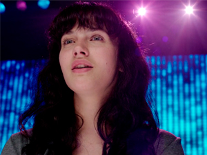
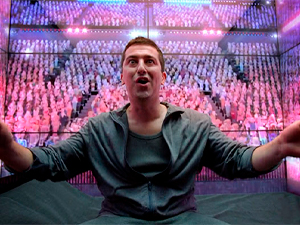
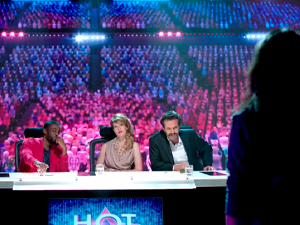
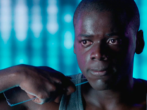
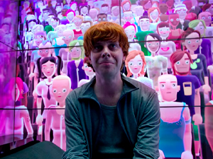
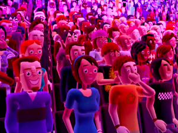

Conocé a nuestros protagonistas
     
Bing: Se siente insatisfecho con su vida de consumo de cosas irreales y repetitiva. Un día escucha a Abi cantar y la convence de presentarse en un show de talentos, aferrándose a la idea de haber encontrado algo real.
Abi: Es una chica introvertida e inocente. Se presenta al show de talentos con la ayuda de Bing para cantar una canción que su madre le había enseñado. Todo cambia cuando en "Hot Shot" es humillada y tratada como un objeto.
Los jueces: Son personas superficiales que se benefician del trabajo de otros y de sus esperanzas para salir de la monotonía. Son personas sin empatía y que lo único que les importa es vender espacios televisivos